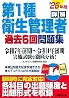
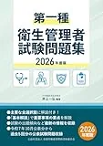

第一種衛生管理者のおすすめ問題集3選【過去問・予想模試2026】
テキスト完走後の演習量確保に向け、2026年度版の問題集3冊を比較します。本番は100問・180分（13:30〜16:30）・5科目各20問・総合60％+各科目40％足切りです。執筆時点（2026-06-12）のAmazon税込参考は、ユーキャン1,760円・成美堂1,540円・労基団連2,420円。購入前に各販売ページで最新の価格・在庫・版を確認してください。
この記事の要点
本記事を読むと、3冊の向き不向きが分かり、たとえば「8月末テキスト完走→9月成美堂で100問2回→10月ユーキャン予想模試→616問で弱点解き直し」まで問題集1冊の選び方と演習順を設計できます。
- 「2026年版 ユーキャンの第1種衛生管理者 重要過去問&予想模試」
- 「詳解 第1種衛生管理者過去6回問題集 '26年版」
- 「第一種衛生管理者試験問題集 2026年度版」
- 収録形式の違い
- 予想模試か過去6回か
この記事の信頼性について
| 執筆 | 一衛マスター編集部（資格学習サイトの編集チーム） |
|---|---|
| 確認 | 公式情報確認担当（公開前に一次情報との照合を行う担当者） |
| 事実確認日 | 2026-06-12 |
| 主な参照元 |
16月開始：問題集を選ぶ3基準（5科目足切り前提）
問題集は、テキストで全体像を掴んだあとの演習量確保が主目的です。購入前に試験協会要項で100問180分・5科目足切りを確認し、次の3点で比較してください。たとえば6/14（土）開始なら、7〜8月はテキスト中心、9月以降に問題集メインへ切り替える計画が定番です。
| 観点 | 確認内容 |
|---|---|
| 収録形式 | テーマ別過去問か、直近6回通しか、公表問題解説か |
| 時間練習 | 100問180分の本番形式に近い演習ができるか |
| 解説の戻り方 | 誤答から条文・用語へ戻れる解説量があるか |
3冊同時購入より、演習計画を決めてから1冊に絞る方が、足切り対策では迷いが少ないです。
おすすめ問題集3選（比較）
価格・在庫は執筆時点（2026-06-12）のAmazon税込参考です。購入前に販売ページで最新版を確認してください。
| 順位 | 商品名 | 価格（税込参考） | ページ数 | 向いている人 |
|---|---|---|---|---|
| 1 | 2026年版 ユーキャンの第1種衛生管理者 重要過去問&予想模試 | ¥1,760 | 320 | 予想模試付きで演習量を一気に確保したい人 |
| 2 | 詳解 第1種衛生管理者過去6回問題集 '26年版 | ¥1,540 | 288 | 直近の本試験形式で解きたい人 |
| 3 | 第一種衛生管理者試験問題集 2026年度版 | ¥2,420 | 256 | 試験実施団体系の問題形式に慣れたい人 |

2026年版 ユーキャンの第1種衛生管理者 重要過去問&予想模試
- 重要過去問と予想模試を1冊で回しやすい
- ユーキャン系列で速習テキストとの併用がしやすい
- 直前期の総仕上げにも使える

詳解 第1種衛生管理者過去6回問題集 '26年版
- 過去6回分を解説付きで収録
- 本試験に近い形式で時間配分の練習に向く
- 成美堂の問題集ラインで他教材と組み合わせやすい

第一種衛生管理者試験問題集 2026年度版
- 労基団連発行で試験形式に近い演習ができる
- 足切り対策の演習量確保に向く
- 他社問題集との使い分けで弱点補強しやすい
23冊比較表の見方（価格・ページ・演習の型）
比較表は価格だけでなく「どの演習サイクルに乗せるか」で読むのがポイントです。
| 項目 | ユーキャン | 成美堂過去6回 | 労基団連 |
|---|---|---|---|
| 価格参考 | 1,760円（税込） | 1,540円（税込） | 2,420円（税込） |
| 収録 | 重要317問＋予想模試2回 | 過去6回（令和7前期〜令和4後期） | 公表5回＋傾向一覧 |
| 演習の型 | テーマ別に弱点を埋める | 100問通しの時間感覚 | 試験実施団体の出題形式 |
| 向く時期 | 10月直前の仕上げ | 9月の本番形式演習 | 法令・管理体制の解説読み込み |
一衛マスター616問は無料で科目別演習に使えるため、問題集は「100問通しの追加」か「予想模試1回分」かの役割で1冊選ぶとコスト対効果が高いです。
31位：ユーキャン重要過去問&予想模試（テーマ別＋仕上げ模試）
「2026年版 ユーキャンの第1種衛生管理者 重要過去問&予想模試」（自由国民社・1,760円税込参考）は、公表問題から厳選した317問をテーマ別に並べ、重要度を3段階で示す問題集です。一肢ごとの解説と補足図表があり、独学でも「どこが誤りか」を確認しやすい構成です。予想模試2回分が付属するため、10月直前の本試験シミュレーションにも使えます。
- 向いている人：ユーキャン速習レッスンとセットで学習したい人
- 弱点テーマをまとめて解き直したい人
- 直前期に模試1〜2回分を足したい人
特例第一種のみ受験する場合は、有害マーク付き問題に絞る運用も可能です。
注意点：100問通しの時間配分練習より、テーマ別演習・仕上げ向きです。9月の本番形式演習は成美堂過去6回か616問100問通しと併用するのが定番です。
42位：成美堂過去6回問題集（100問・180分の時間感覚）
「詳解 第1種衛生管理者過去6回問題集 '26年版」（成美堂出版・1,540円税込参考）は、令和7年前期から令和4年後期までの実施試験6回分を収録した解説付き問題集です。マークシート解答用紙付きで、本番に近いペース感を養いやすいのが強みです。法改正対応済みの選択肢解説があり、出題頻度データも確認できます。
向いている人：9月に100問通しを2回以上こなしたい人、直近の出題形式で時間配分を鍛えたい人。週8時間なら「日曜180分で1回分→平日に誤答解き直し」のサイクルが回しやすいです。
- ユーキャンとの使い分け：9月は成美堂で100問×2
- 10月にユーキャン予想模試で仕上げ
- という2段構えが現実的
5科目すべて8/20以上が出るまで、新しい問題集を増やさない判断が安全です。
53位：労基団連試験問題集（実施団体の出題形式に慣れる）
「第一種衛生管理者試験問題集 2026年度版」（全国労働基準関係団体連合会・2,420円税込参考）。
- 試験実施団体系の解説で
- 令和7年10月公表分を含む過去5回の公表問題を収録してい
根拠条文・ポイント整理・基本解説（図表）があり、法令・管理体制の「なぜその数値か」まで読み込みたい人向けです。
向いている人：労基団連の文体に慣れておきたい人、関連法令（有害以外）で解説の厚みが欲しい人。価格は3冊中最も高いため、弱点科目が明確になってから購入する判断もあります。
616問との併用：一衛マスターで科目別正答率を記録→40％未満科目を労基団連の該当章で解く→1週間後に616問から同分野20問、の順が定番です。過去問の回し方記事とセットで、周回目的（理解・定着・本番形式）を分けて記録してください。
6よくある質問
問題集は何冊買えばよいですか？
ユーキャンと成美堂、どちらがよいですか？
価格・在庫・最新版はどこで確認しますか？
記事の基本情報
| ジャンル | 独学対策 |
|---|---|
| タグ | 独学 / 教材 / 学習計画 |
公式情報の確認
公式情報の確認：第一種衛生管理者試験の最新情報は、安全衛生技術試験協会（公式）などの公式情報を必ず確認してください。本人に割り当てられた試験会場は受験票の表記が正本です。